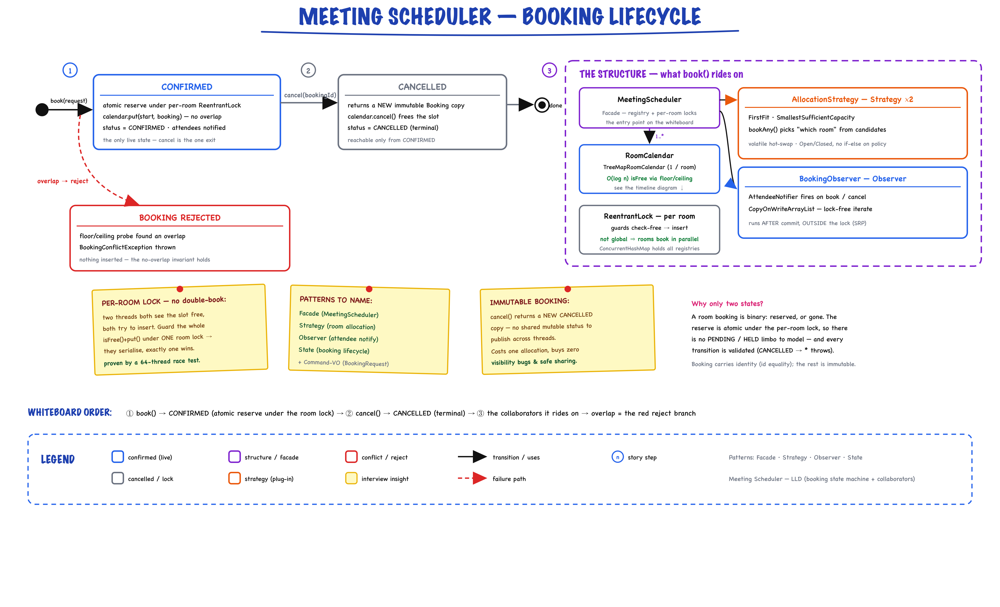
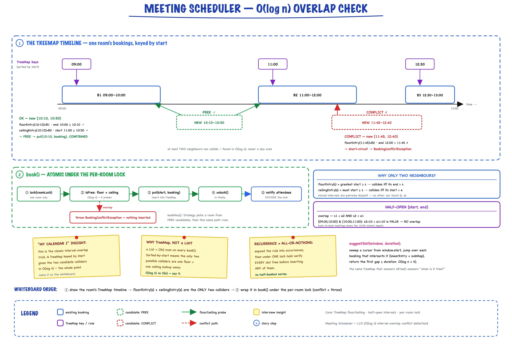

Meeting Scheduler // LLD
Register rooms, book half-open [start, end) intervals with O(log n) TreeMap overlap detection, reject double-bookings, cancel, find rooms by capacity, suggest slots, and expand recurring meetings — all thread-safe via per-room locks.
01 — Requirements
Functional
- Register a room — id, capacity, location. Each room gets its own calendar and lock.
- Book a room — reserve a half-open interval [start, end) for a set of attendees; headcount must not exceed capacity.
- Conflict detection — detect interval overlap and reject double-booking (the core invariant).
- Cancel a booking — frees the slot; returns a new CANCELLED copy.
- Find free rooms — all rooms free for an interval with at least a minimum capacity.
- Suggest earliest slot — earliest available window of a given duration within a search window.
- List a room's schedule for a given day.
- Recurring meetings — daily/weekly expansion into concrete occurrences; all-or-nothing on conflict.
Non-Functional
- Correctness of the overlap invariant above everything — two overlapping bookings for one room must never both succeed.
- Thread-safety — concurrent clients booking simultaneously must serialize; exactly one wins a contested room+slot.
- Efficiency — overlap detection better than O(n) per room → O(log n) via an ordered map.
- Extensibility — allocation policy and notification channel swappable without touching core logic (OCP).
- Clarity — immutable value objects; concurrency reasoning localized to one place.
02 — Core Entities
| Entity | Layer | Purpose / Internal Summary |
|---|---|---|
| TimeInterval | model (VO) | Immutable half-open [start, end). Validates start < end. overlaps() = s1<e2 && s2<e1. The single source of overlap truth. |
| Room | model (entity) | Immutable id (identity), capacity, location. equals/hashCode on id. |
| Attendee | model (VO) | Immutable id/name/email. Deliberately logic-free — notification lives in the observer, not here (SRP). |
| Booking | model (entity) | Immutable snapshot: id, room, interval, organizer, attendees (unmodifiable, includes organizer), title, status. cancelled() returns a new CANCELLED copy — no mutable field to publish under concurrency. |
| BookingRequest | model (VO / command) | Bundles booking params; roomId nullable (null ⇒ let strategy choose). withInterval() supports recurrence expansion. |
| RoomSlot | model (VO) | (Room, TimeInterval) — the unit an allocation strategy chooses between. |
| RoomCalendar | service (interface) | Per-room ordered bookings: isFree, book, cancel, scheduleFor(day), earliestFreeSlot. |
| MeetingScheduler | root (facade) | Registry, per-room calendars, per-room locks, strategy, observers, bookingsById index. |
Enums & Recurrence
| Type | Values / Fields | Key Logic |
|---|---|---|
| BookingStatus | CONFIRMED, CANCELLED | CONFIRMED → CANCELLED (terminal). No other transitions. |
| Frequency | DAILY, WEEKLY | Knows its ChronoUnit + step for declarative recurrence expansion. |
| RecurrenceRule | frequency × occurrences | Expands one request into N concrete intervals via withInterval(). |
03 — Design Patterns
Four patterns, each earning its place — the interview differentiator.
Strategy — Allocation
AllocationStrategy decides "which room" — FirstFit vs SmallestSufficientCapacity (best-fit by capacity). Encapsulating it keeps MeetingScheduler closed for modification. Alternative: if/else on an enum inside the scheduler — rejected, violates OCP and untestable in isolation.
Observer — Notification
BookingObserver / AttendeeNotifier react to book/cancel. Notifications (attendees, audit, calendar sync) are cross-cutting; keeping them out of Booking honours SRP and lets us add channels without editing the booking path. Alternative: call an EmailService inside book() — rejected, couples core to delivery.
Facade — MeetingScheduler
One coherent API over registry, calendars, locks, strategy, observers. The "god object" an interviewer reads first, but it delegates — no business logic beyond orchestration + locking.
Command / Value Object
BookingRequest bundles parameters so signatures stay small and a request can be retargeted (withInterval) during recurrence expansion.
04 — Booking State Machine
Why a state machine? A booking has exactly one legal transition: CONFIRMED → CANCELLED (terminal). Cancel returns a new CANCELLED copy rather than mutating a field — so there is no shared mutable status to publish across threads.

Booking lifecycle as a whiteboard state machine: book() reserves atomically under the per-room lock → CONFIRMED; cancel() returns a new immutable copy → CANCELLED (terminal). The dashed cluster is the structure it rides on — Facade, Strategy×2, Observer, per-room ReentrantLock — and an overlap becomes the red rejected branch (nothing inserted).
Immutable Cancellation in Code
public final class Booking { private final String id; private final Room room; private final TimeInterval interval; private final Set<Attendee> attendees; // unmodifiable, incl. organizer private final BookingStatus status; // No mutable state -> returns a NEW copy, safe to share across threads public Booking cancelled() { return new Booking(id, room, interval, organizer, attendees, title, BookingStatus.CANCELLED); } }
"Immutable Booking costs an allocation on cancel, but buys zero visibility bugs and safe sharing across threads — worth it for the correctness guarantee."
05 — Strategy Pattern
Why Strategy? "Which room" is a policy that changes (first-fit, smallest-sufficient, cost-based, nearest-to-requester). Encapsulating it keeps MeetingScheduler closed for modification — a new policy is a new class, hot-swappable via a volatile field.
Allocation Strategy Interface
interface AllocationStrategy { Optional<RoomSlot> select(List<RoomSlot> candidates); String getName(); }
| Implementation | Logic |
|---|---|
| FirstFitAllocation | Return candidates.get(0) — first viable room in the ranked candidate list. Simple, fast, predictable. |
| SmallestSufficientCapacityAllocation | Best-fit by capacity: pick the room with the smallest capacity that still fits. Preserves big rooms for big meetings — a bin-packing-style heuristic. |
FirstFit vs SmallestSufficient
// FirstFitAllocation -- take the first ranked candidate public Optional<RoomSlot> select(List<RoomSlot> candidates) { if (candidates.isEmpty()) return Optional.empty(); return Optional.of(candidates.get(0)); } // SmallestSufficientCapacityAllocation -- best-fit by capacity public Optional<RoomSlot> select(List<RoomSlot> candidates) { return candidates.stream() .min(Comparator.comparingInt(s -> s.getRoom().getCapacity())); }
How the Scheduler uses it (bookAny)
// 1. Scan for candidate (room, interval) slots that fit capacity + are free for (Room room : rooms.values()) { if (room.getCapacity() < needed) continue; if (isFreeUnderLock(room.getId(), interval)) candidates.add(new RoomSlot(room, interval)); } // 2. Strategy chooses; retry down the ranked list if a race stole the winner Optional<RoomSlot> chosen = allocationStrategy.select(remaining); try { return book(targeted); } catch (BookingConflictException raceLost) { remaining.remove(pick); }
06 — Key Algorithm: Interval Overlap
The signature detail. Bookings in a room are non-overlapping, stored in a TreeMap<LocalDateTime, Booking> keyed by start time. For a candidate [s, e) at most two existing intervals can collide — found in O(log n) via floorEntry + ceilingEntry. This is the classic "My Calendar I" insight.
O(log n) Conflict Check (TreeMapRoomCalendar.isFree)
public boolean isFree(TimeInterval candidate) { LocalDateTime s = candidate.getStart(); LocalDateTime e = candidate.getEnd(); // floorEntry(s): greatest start <= s. Collides iff it runs PAST s. Map.Entry<LocalDateTime, Booking> floor = bookingsByStart.floorEntry(s); if (floor != null && floor.getValue().getInterval().getEnd().isAfter(s)) return false; // ceilingEntry(s): least start >= s. Collides iff it BEGINS before e. Map.Entry<LocalDateTime, Booking> ceiling = bookingsByStart.ceilingEntry(s); if (ceiling != null && ceiling.getValue().getInterval().getStart().isBefore(e)) return false; return true; // no neighbour collides -> slot is free }
Why only two neighbours?
- floorEntry(s) = the meeting with the greatest start ≤ s; it collides iff it runs past s (end > s).
- ceilingEntry(s) = the meeting with the least start ≥ s; it collides iff it begins before e (start < e).
- Because stored intervals are pairwise non-overlapping, any meeting strictly earlier than the floor ends before the floor starts (so before s), and any strictly later than the ceiling starts after e. Neither can touch [s, e). Both navigations are O(log n).
Half-open [start, end) semantics — why adjacency is legal
// TimeInterval.overlaps: [s1,e1) and [s2,e2) overlap iff s1 < e2 AND s2 < e1 public boolean overlaps(TimeInterval other) { return this.start.isBefore(other.end) && other.start.isBefore(this.end); } // [9:00, 10:00) and [10:00, 11:00): // s1=9 < e2=11 -> true // s2=10 < e1=10 -> FALSE => NOT overlapping // Back-to-back meetings share the 10:00 instant WITHOUT conflicting. // A closed [start, end] model would wrongly reject the 10:00 handoff.
Earliest-slot search + recurrence
// earliestFreeSlot(window, duration): sweep a cursor from window.start, // jump over each booking intersecting the window (lowerEntry + subMap), // return the first gap >= duration. O(log n + k). // bookRecurring: expand rule into concrete occurrences, then under a // SINGLE hold of the room lock verify EVERY occurrence is free before // inserting ANY -> all-or-nothing, no half-booked series.
07 — Thread Safety
| Mechanism | Where | Why |
|---|---|---|
| ConcurrentHashMap | rooms, calendars, roomLocks, bookingsById | Safe concurrent access to all registry maps and the O(1) cancel/lookup index |
| ReentrantLock (per room) | book() / cancel() / bookRecurring() | Makes the check-free → insert window atomic. Different rooms never contend. |
| volatile field | allocationStrategy | Hot-swap the policy at runtime with a safe publish |
| CopyOnWriteArrayList | observers | Lock-free iteration while notifying; rare mutation |
| Immutable Booking | model layer | Cancel returns a new copy — no shared mutable status to publish |
"The dangerous window is check-then-insert: two threads both see the slot free, both insert. I guard the whole isFree()+put() under a per-room lock, so racing threads serialize and exactly one wins. Locks are per-room, not global, so different rooms book in full parallelism."
Atomic Check-then-Insert (MeetingScheduler.book)
ReentrantLock lock = roomLocks.get(room.getId()); lock.lock(); try { // isFree() + put() run together -- indivisible under the room lock calendars.get(room.getId()).book(booking); // throws BookingConflictException bookingsById.put(booking.getId(), booking); } finally { lock.unlock(); } notifyBooked(booking); // AFTER commit, OUTSIDE the lock
Design notes on the locking
- The calendar (TreeMapRoomCalendar) is deliberately not internally synchronized — all access goes through the room lock. This concentrates concurrency reasoning in one place instead of scattering it. A documented invariant, stated in Javadoc.
- Observers fire outside the lock so a slow/faulty notifier can't widen the critical section or deadlock.
- Verified by a 64-thread race test: exactly one book() returns, 63 throw BookingConflictException, and the calendar holds one booking.
08 — Service API
What to write on the whiteboard first.
class MeetingScheduler { // Facade / orchestrator void registerRoom(Room room); // Book a NAMED room; throws if request.roomId conflicts Booking book(BookingRequest request); // Book SOME free room >= minCapacity; strategy chooses which Booking bookAny(BookingRequest request, int minCapacity); // Recurring, all-or-nothing under one lock hold List<Booking> bookRecurring(BookingRequest request, RecurrenceRule rule); Booking cancel(String bookingId); List<Room> findAvailableRooms(TimeInterval interval, int minCapacity); Optional<RoomSlot> suggestSlot(TimeInterval window, Duration d, int cap); List<Booking> roomSchedule(String roomId, LocalDate day); void setAllocationStrategy(AllocationStrategy strategy); // volatile swap void addObserver(BookingObserver observer); }
Collaborator interfaces
interface RoomCalendar { // one per room boolean isFree(TimeInterval interval); void book(Booking booking); // throws BookingConflictException boolean cancel(Booking booking); List<Booking> scheduleFor(LocalDate day); List<Booking> allBookings(); Optional<TimeInterval> earliestFreeSlot(TimeInterval window, Duration d); } interface AllocationStrategy { Optional<RoomSlot> select(List<RoomSlot> candidates); String getName(); } interface BookingObserver { void onBooked(Booking booking); void onCancelled(Booking booking); }
Exception Hierarchy
BookingConflictException // slot overlaps an existing booking RoomNotFoundException // roomId not registered BookingNotFoundException // cancel/lookup of unknown bookingId NoRoomAvailableException // bookAny found no free room >= capacity
09 — Happy Path Flow
Trace book() end-to-end in the interview.

The book() happy path, centered on its signature step. A room's bookings live in a TreeMap keyed by start; a candidate [s, e) can only collide with floorEntry(s) or ceilingEntry(s) — so isFree() is O(log n), never a day scan (green FREE vs red CONFLICT). The whole isFree()+put() runs under the per-room lock; observers fire after commit, outside it.
10 — Key Data Structures
// MeetingScheduler -- registry + concurrency control Map<String, Room> rooms = new ConcurrentHashMap<>(); Map<String, RoomCalendar> calendars = new ConcurrentHashMap<>(); Map<String, ReentrantLock> roomLocks = new ConcurrentHashMap<>(); Map<String, Booking> bookingsById = new ConcurrentHashMap<>(); // O(1) cancel/lookup volatile AllocationStrategy allocationStrategy; // hot-swappable List<BookingObserver> observers = new CopyOnWriteArrayList<>(); // TreeMapRoomCalendar -- the per-room ordered calendar NavigableMap<LocalDateTime, Booking> bookingsByStart = new TreeMap<>(); // keyed by interval start; overlap check = floorEntry + ceilingEntry, O(log n)
Why TreeMap keyed by start time?
- Ordered navigation — floorEntry/ceilingEntry/lowerEntry/subMap give O(log n) neighbour queries, the whole reason overlap detection beats an O(n) day-scan.
- Non-overlapping invariant — because the calendar only ever holds pairwise-disjoint intervals, exactly two neighbours can collide with a candidate.
- Day schedule — scheduleFor(day) is a subMap over [day 00:00, day+1 00:00), already sorted.
- Not internally synchronized — the scheduler's per-room lock guards it, so the class stays a plain, single-threaded data structure.
11 — Interview Follow-up Q&A
How do you detect per-attendee conflicts (a person double-booked)?
How would you extend this to a distributed / multi-node system?
How do you handle time zones and DST?
How do you avoid materializing very long recurrence horizons?
Reads dominate writes — how do you optimize?
Why a per-room lock instead of one global lock?
Can you auto-suggest an alternative when a booking conflicts?
How do you add buffer/setup time between meetings?
Why immutable Booking instead of a mutable status field?
12 — Package Structure
meetingscheduler/ ├── model/ │ ├── TimeInterval -- immutable [start,end); overlaps() = s1│ ├── Room -- immutable id/capacity/location; equals on id │ ├── Attendee -- immutable VO, logic-free (SRP) │ ├── Booking -- immutable snapshot; cancelled() -> new copy │ ├── BookingStatus -- CONFIRMED -> CANCELLED (terminal) │ ├── BookingRequest -- command VO; nullable roomId; withInterval() │ ├── RoomSlot -- (Room, TimeInterval) allocation candidate │ ├── RecurrenceRule -- frequency x occurrences │ └── Frequency -- DAILY/WEEKLY; ChronoUnit + step ├── service/ │ ├── RoomCalendar -- interface: isFree/book/cancel/scheduleFor/earliestFreeSlot │ ├── AllocationStrategy -- interface: select(List<RoomSlot>) │ └── BookingObserver -- interface: onBooked/onCancelled ├── service/impl/ │ ├── TreeMapRoomCalendar -- O(log n) overlap via floor/ceiling │ ├── FirstFitAllocation -- take first ranked candidate │ ├── SmallestSufficientCapacityAllocation -- best-fit by capacity │ └── AttendeeNotifier -- observer: "emails" attendees ├── exception/ │ ├── BookingConflictException -- slot overlaps existing │ ├── RoomNotFoundException -- unknown roomId │ ├── BookingNotFoundException -- unknown bookingId │ └── NoRoomAvailableException -- no free room >= capacity ├── MeetingScheduler -- facade: registry + per-room locks + strategy + observers └── MeetingSchedulerDemo -- 6 runnable scenarios
immutable model · 3 service interfaces · 4 impls · per-room locking · full working demo
13 — Patterns Summary
| Pattern | Where | Why |
|---|---|---|
| Strategy | AllocationStrategy (FirstFit, SmallestSufficientCapacity) | Swap "which room" policy without touching orchestrator or calendar |
| Observer | BookingObserver / AttendeeNotifier | Notify attendees on book/cancel without baking it into the entity (SRP) |
| Facade | MeetingScheduler | One entry point over registry, calendars, locks, strategy, observers |
| Command / VO | BookingRequest | Bundle booking params; reuse (withInterval) when expanding recurrences |
| State Machine | BookingStatus (CONFIRMED → CANCELLED) | Single legal transition; immutable copy-on-cancel, no shared mutable status |
| Value Object | TimeInterval, Attendee, RoomSlot (immutable) | Thread-safe by design; TimeInterval is the single source of overlap truth |
| Entity | Room, Booking (identity by id) | Identity-based equality; Booking is an immutable snapshot |
O(log n) overlap · half-open intervals · per-room locks · every class earns its place